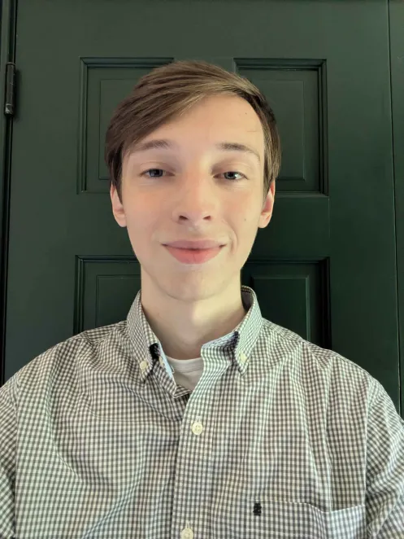

John Derstine
- Software Developer at Booz Allen Hamilton
- Student at Rochester Institute of Technology
- Bachelor's Degree in Game Design & Development
- Eagle Scout
Welcome to my portfolio! First, a little bit about my past: I grew up near Philadelphia, Pennsylvania. I’ve always had a passion for games, whether it be video games, analog, or physical. This interest convinced me to join Boy Scouts where I later went on to become an Eagle Scout. It also led me to take multiple computer programming courses in High School, where I hoped I would learn the tools to make games of my own. I then decided enroll at Rochester Institute of Technology (RIT) for a major in Game Design & Development. Through the co-op program at RIT, I landed a position at PARGovernment, which has since been acquired by Booz Allen Hamilton where I work now.
My passion for games is still strong, and I am currently searching for a position more suited towards my interests. I have many personal projects that I am currently working on whose progress can be viewed through the tabs at the top of the page. I have other past projects, both school and personal, but I have decided to keep this website updated with the most current and relevant projects. I hope you find these endeavors interesting and explore what I have done and learned.